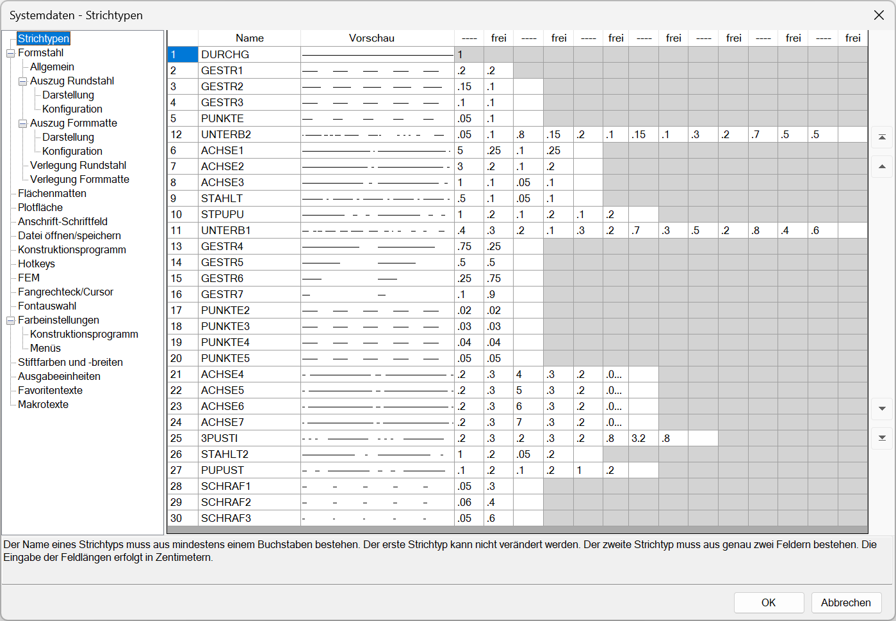

.png)
Windows-Startmenü → Programmgruppe ISBCAD 2026 → Hauptmenü → Systemdaten.
Alternativ:
")

Konfiguration der Programmoberfläche, des Programmverhaltens sowie der Voreinstellungen für das Konstruktions- und Bewehrungsprogramm. Öffnet den Dialog Systemdaten.
Einstellungen:
•Darstellung der Programmoberfläche (Farben, Menü- und Schaltflächendarstellung)
•Voreingestelltes Programmverhalten (Fangmarken, Rückmeldungen, Genauigkeit, Nachkommastellen etc.)
•Voreinstellungen für die Zeichnungsdarstellung
(Schriftgrößen, Stiftdefinitionen, Liniendefinitionen, Bemaßung, Positionierungen, vorgeschlagene Eingabewerte etc.)
•Projekt- und Favoritenverzeichnisse
•Planangaben (Blattgröße, Anschriften-Feld)
•Verfügbare Schriften
•Individuelle Tastaturbelegung (Hotkeys)
•In der Abfrage angebotene Texte (Favoritentexte)
Um Änderungen zu übernehmen, klicken Sie im unteren Dialogbereich auf OK. Wenn Sie alle Änderungen verwerfen möchten, klicken Sie auf Abbrechen.
Optionen im Dialog "Systemdaten"
 |
Registerkarten |
Beschreibung |
|---|---|
Konfiguration und Sortierung von Strichtypen (Linientypen). |
|
Voreinstellungen für die Darstellung von Auszügen und Verlegungen für Rund(Form)-stahl und Formmatten. |
|
Voreinstellungen für die Mattendarstellung und -beschriftung. |
|
Voreinstellung der Größe der Plotfläche für neue Zeichnungen. |
|
Voreinstellungen für die Angaben im Zeichnungs-Schriftfeld und auf der Stahlliste. |
|
Auswahl des Projektverzeichnisses und der Favoritenverzeichnisse. |
|
Konfiguration der Werkzeuge und des Programmverhaltens im Konstruktions- und Bewehrungsprogramm. |
|
Konfiguration der Tastaturbelegung. |
|
Voreinstellungen für Schriftart und Schriftgröße von FEM-Werten. |
|
Konfiguration des Fadenkreuzes (Cursor) und Fangbereiches. |
|
Auswahl der in ISBCAD verfügbaren Schriftarten (Fonts). |
|
Farbeinstellungen für das Konstruktions- und Bewehrungsprogramm. |
|
Konfiguration der Stiftfarben und -breiten für die Bildschirmdarstellung. |
|
Voreinstellungen für die Ausgabe der Längeneinheiten. |
|
Angabe häufig verwendeter Texte, die in den Funktionen angeboten werden. |
|
Darstellung von Makrotexten in der Zeichnung. |
Siehe auch: